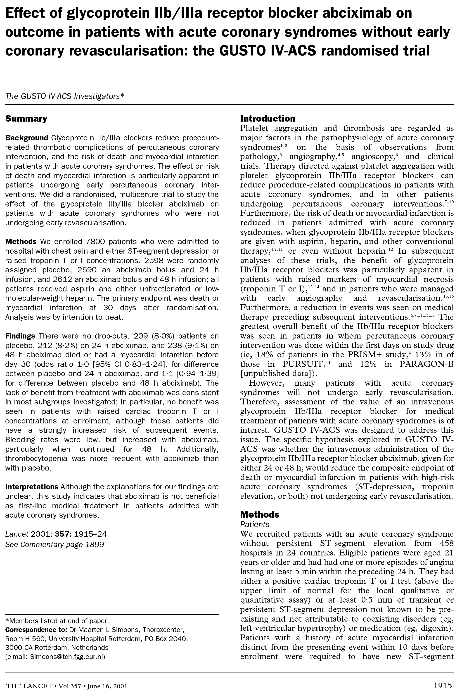
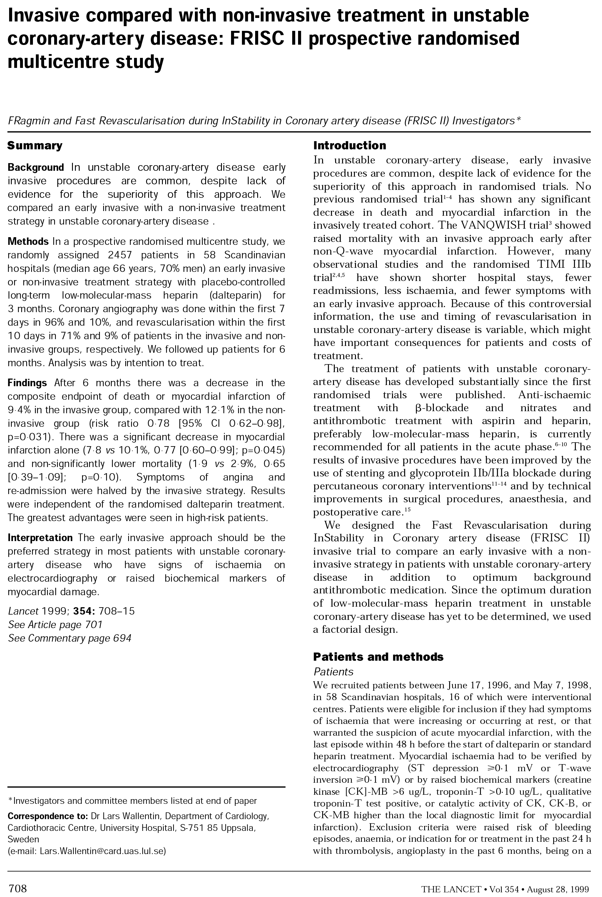
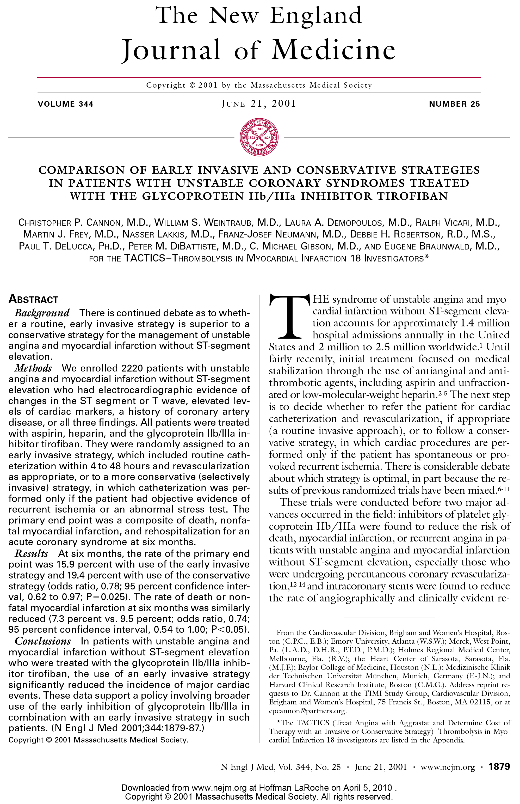

2012 ACCF/AHA Updated Guidelines
The 3 largest cardiac studies referenced by the 2012 ACCF/AHA Updated Guidelines support the clinical value of Roche Troponin T.8
GUSTO IV 9
FRISC II 10
TACTICS TIMI-18 11
GUSTO IV investigators: “Effect of glycoprotein IIb/IIIa receptor blocker abciximab on outcome in patients with ACS without early coronary revascularization: The GUSTO IV - ACS randomized trial.” Lancet 2001; 357: 1915-1924
- 7,115 patients
- TnT is a strong prognostic predictor of death.
- TnT is a predictor of future MIs.
- TnT was independently predictive of ACS across the entire spectrum of renal function.
FRISC II investigators: “Invasive compared with non-invasive treatment in unstable coronary-artery disease: FRISC II prospective randomized multicenter study.” Lancet 1999; 354: 708-715
- 1,074 patients
- Mortality was lowest for patients with undetectable TnT levels.
- As TnT increases, so does the risk of mortality.
TACTICS TIMI 18 Trial: Cannon, C.P. et al.: “Comparison of early invasive and conservative strategies in patients with unstable coronary syndromes treated with the glycoprotein IIb/IIIa inhibitor Tirofiban.” NEJM 2001; 344: 1879-87
- 2,220 patients
- Patients with TnT levels greater than 0.01ng/mL benefited from an invasive strategy (catheterization).
- Patients with positive TnT that were catheterized had a reduction of 50% in MI or death at 30 days.
The 3 largest cardiac studies referenced by the 2012 ACCF/AHA Updated Guidelines support the clinical value of Roche Troponin T.4
- GUSTO IV
- FRISC II
- TACTICS TIMI-18